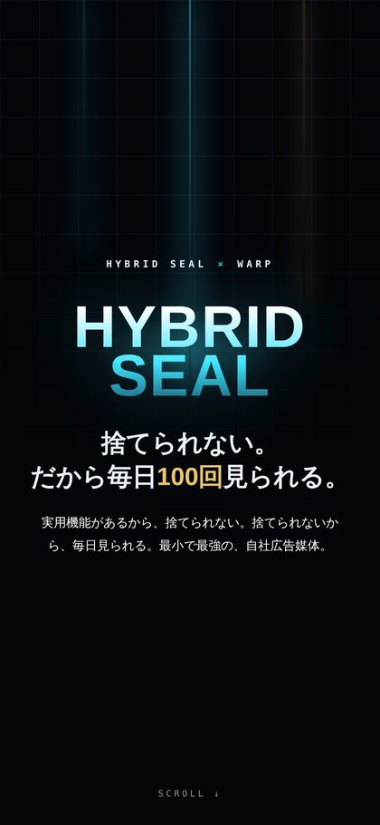
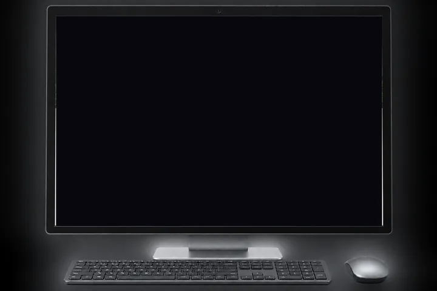
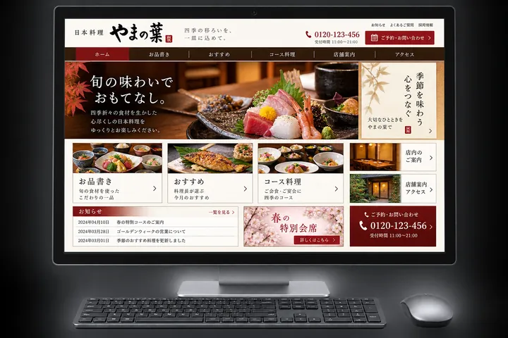
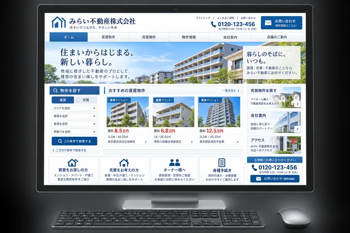
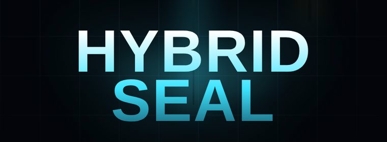
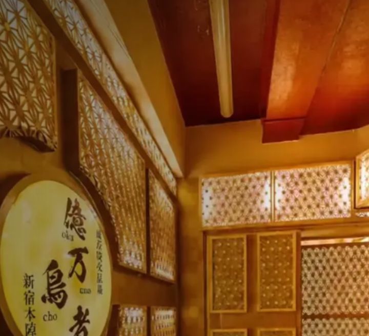
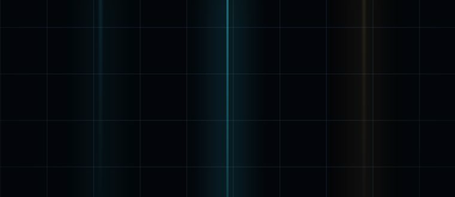

開いた人の手が、止まる。「すごい」と言われる。御社の話は、そこから始まります。

見るだけでなく、お客さん自身が触って、動かせるサイト。日本ではまだ、ほとんど流通していません。
会社の“顔”が、まるごと変わる金額です。
「手が届かない」と思っていた見せ方は、もう大企業だけのものではありません。
事業をゼロから立ち上げ、数々のブランドを運営してきたプロが、御社のブランド体験を創出します。
新聞の発行部数は、1997年の約5,400万部から2025年には
約2,500万部へ。半分以下です。
悪いサイトだから、見られていないのではありません。止まっているものは、脳にとって背景です。
同業他社のサイトを、思い出してみてください。触れて動かせるサイトは、あったでしょうか？
就活の面接会場のように、全員が同じ顔で並んでいるだけです。



これは、遅れではありません。空席です。

証明写真は、間違ってはいません。ただ、写真を見て「この人に会いたい」とは思わない。1年後まで覚えているのは、会って話した人です。サイトも同じ。触ったサイトだけが、記憶に残ります。
見せて終わりにしません。お客さんの操作に、そのサイト固有の反応を返します。それが体験型サイトです。
指でなぞった
ところが現れる
ページを繰るように
読ませる
商品を全方向から
確かめさせる
選んだ条件で
中身が変わる
色や仕様を
その場で見比べる
飲食店なら、指で回して盛り付けを見せる。3つ選ばせて、その人に合うコースを出す。業種ごとに、起こさせたい行動は違います。そこを一緒に設計致します。
第2世代の2本は、食べログ ホットレストラン2年連続受賞・保存9万人超の新宿人気2店舗にご採用いただいたものです。
記憶に残るクリエイティブだけが、広告費を“積立”に変えます。
だから、サイトが先、広告が後です。
約450件の広告キャンペーンを分析した調査があります。
見せるものを変えずに広告費だけ足しても、成果の半分を決める部分は1円も良くなりません。
ある高級バッグのブランドが、商品ページに「触って回せる3D機能」を導入しました。
同じページを見た人で、この機能を触った人と触らなかった人に分けて比べた調査結果です。
3Dを触った人は、触らなかった人より44%高い
3Dを触った人は、触らなかった人より27%高い
触れる場所を用意しなければ、その買う気のあるお客さんも、写真を眺めるだけで終わっていました。

| LP（1ページ） | 60万円 |
| ホームページ（3ページ） | 98万円 |
| 追加1ページ | 10万円 |
まず第2世代で顔を変え、手応えを見て第3世代に上げる進め方もできます。

| LP（1ページ） | 180万円 |
| ホームページ（5ページ） | 240万円 |
| 追加1ページ | 15万円 |
体験機能については、クライアント様が求めるブランド体験を協議のうえで実装致します。※価格はすべて税別です。
サイトはA社、SNSはB社、動画はC社と発注先が分かれると、同じ会社なのに見る場所ごとに顔が変わります。同じ一社が、同じ考え方で作ります。
第2世代のモーションサイト、第3世代の体験型サイト。受け皿そのものをつくります。
御社のIPを活かした統一感のあるブランドキット。アニメーション、動画、静止画まで一式。
予算に応じた、攻めのアカウント運用。投稿して終わりにせず、数字を見ながら回します。
検索エンジンと、AIの回答に選ばれるための攻めの施策。AIに判断してもらう側に回ります。
インフルエンサーを使った、攻めの施策。誰に、どう持たせるかまで設計します。
社内オペレーションの自動化。制作の外側にある手間も、まとめて引き受けます。
GROWX代表の岩本は、人材事業、カナダから持ち込んだブランド、自社D2Cブランドを、いずれもゼロから育ててきました。
広告を使いたくても、出せない環境でした。出せていれば、もっと早く、もっと大きくできた。それでも、見せ方と導線と試す回数だけで、ここまで積み上げてきました。その人間が、御社の“見せ方”を設計します。
何秒見たか。どこを触ったか。どこを素通りしたか。全部、記録に残っています。
下の数字は、いままさに動いている、あなた自身のデータです。
御社のサイトにも、この計測ツールを設置します。計測したデータを弊社が分析し、滞在時間・タップされた箇所・素通りされた箇所を毎月レポートで納品します。
どの体験が刺さって、どの体験が刺さっていないのか？を感覚ではなく、データを基に改善していくことが出来ます。
御社の業種なら、お客さんに「何を触らせる」と記憶に残るか。30分で、具体案を2〜3個お出しします。聞くだけで、御社のサイトの伸びしろが分かります。